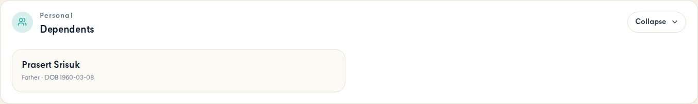
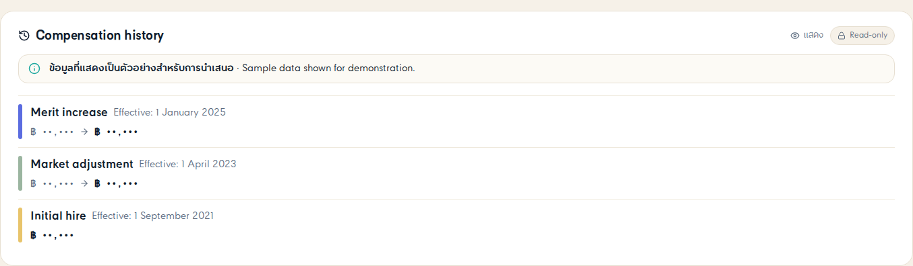
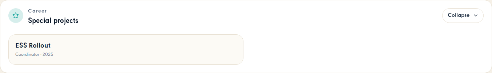

Every field in the BA sheet checked against what the admin Employee File screen
actually renders. Each screen capture sits beside the BA fields routed to it. Captured signed in
as admin@humi.test (hr_admin + hr_manager + spd, so no section is RBAC-hidden), all
collapsibles expanded.
| BA section / sub-section | BA UI field | Mand. | Status | On screen as |
|---|---|---|---|---|
| Compensation Information (ค่าตอบแทน) › Alternative cost centre | ||||
| Employment / Hiring | cost centre | Not required | MISSING | Section "Bank details" is on screen, but this field is not rendered |
| Employment / Hiring | Allocation % | Not required | MISSING | Section "Bank details" is on screen, but this field is not rendered |
| Compensation Information (ค่าตอบแทน) › Payment Information | ||||
| Employment / Hiring | Bank Code | Required | MISSING | Section "Bank details" is on screen, but this field is not rendered |
| Employment / Hiring | Bank | Required | FOUND | Bank / ธนาคาร |
| Employment / Hiring | Account Number | Required | FOUND | Account number / เลขที่บัญชี |
| Employment / Hiring | Bank Country/Region | Required | MISSING | Section "Bank details" is on screen, but this field is not rendered |
| Employment / Hiring | Currency | Required | MISSING | Section "Bank details" is on screen, but this field is not rendered |
| Employment / Hiring | Payment Method | Required | MISSING | Section "Bank details" is on screen, but this field is not rendered |
| Employment / Hiring | Attachment | MISSING | Section "Bank details" is on screen, but this field is not rendered | |
| Compensation Information (ค่าตอบแทน) | ||||
| Employment / Hiring | Payroll ID | Not required | MISSING | Section "Bank details" is on screen, but this field is not rendered |
| Employment / Hiring | Pay Type | Required | MISSING | Section "Bank details" is on screen, but this field is not rendered |
| Employment / Hiring | Pay Component | Required | MISSING | Section "Bank details" is on screen, but this field is not rendered |
| Employment / Hiring | Frequency | Required | MISSING | Section "Bank details" is on screen, but this field is not rendered |
| Employment / Hiring | Amount | Required | MISSING | Section "Bank details" is on screen, but this field is not rendered |
| Employment / Hiring | Currency | Required | MISSING | Section "Bank details" is on screen, but this field is not rendered |
| Employment / Hiring | pay group | Required | MISSING | Section "Bank details" is on screen, but this field is not rendered |
| BA section / sub-section | BA UI field | Mand. | Status | On screen as |
|---|---|---|---|---|
| Contact (ข้อมูลติดต่อ) › Home Address | ||||
| Personal / Hiring | Address Type | Required | MISSING | Section "Contact & address" is on screen, but this field is not rendered |
| Personal / Hiring | Floor | Not Required | MISSING | Section "Contact & address" is on screen, but this field is not rendered |
| Personal / Hiring | Room No. | Not Required | MISSING | Section "Contact & address" is on screen, but this field is not rendered |
| Personal / Hiring | Village | Not Required | PARTIAL | (no dedicated label) |
| Personal / Hiring | House Number | Required | PARTIAL | (no dedicated label) |
| Personal / Hiring | Building | Not Required | MISSING | Section "Contact & address" is on screen, but this field is not rendered |
| Personal / Hiring | Street | Not Required | PARTIAL | (no dedicated label) |
| Personal / Hiring | Moo | Not Required | MISSING | Section "Contact & address" is on screen, but this field is not rendered |
| Personal / Hiring | Lane / Soi | Not Required | MISSING | Section "Contact & address" is on screen, but this field is not rendered |
| Personal / Hiring | District | Required | PARTIAL | (no dedicated label) |
| Personal / Hiring | Sub-District | Required | PARTIAL | (no dedicated label) |
| Personal / Hiring | Province | Required | PARTIAL | (no dedicated label) |
| Personal / Hiring | Postal Code | Required | PARTIAL | (no dedicated label) |
| Personal / Hiring | Country | Required | MISSING | Section "Contact & address" is on screen, but this field is not rendered |
| Personal / Hiring | Attachment | Not Required | MISSING | Section "Contact & address" is on screen, but this field is not rendered |
| Contact (ข้อมูลติดต่อ) › Email Information | ||||
| Personal / Hiring | Email Type | Required | MISSING | Section "Contact & address" is on screen, but this field is not rendered |
| Personal / Hiring | Email Address | Required | FOUND | Email / อีเมล |
| Personal / Hiring | Is Primary | Required | PARTIAL | (no dedicated label) |
| Contact (ข้อมูลติดต่อ) › Phone Information | ||||
| Personal / Hiring | Phone Type | Required | PARTIAL | (no dedicated label) |
| Personal / Hiring | Country Code | Required | PARTIAL | (no dedicated label) |
| Personal / Hiring | Phone Number | Required | FOUND | Phone / โทรศัพท์ |
| Personal / Hiring | Extension | Not Required | MISSING | Section "Contact & address" is on screen, but this field is not rendered |
| Personal / Hiring | Is Primary | Required | PARTIAL | (no dedicated label) |
| Contact (ข้อมูลติดต่อ) › Social Accounts Information | ||||
| Personal / Hiring | Domain | Not Required | MISSING | Section "Contact & address" is on screen, but this field is not rendered |
| Personal / Hiring | Instant Messaging ID | Not Required | MISSING | Section "Contact & address" is on screen, but this field is not rendered |
| Personal / Hiring | URL | Not Required | MISSING | Section "Contact & address" is on screen, but this field is not rendered |

| BA section / sub-section | BA UI field | Mand. | Status | On screen as |
|---|---|---|---|---|
| Dependents (บุคคลในอุปการะ) | ||||
| Personal / Hiring | Relationship | Not Required | PARTIAL | (no dedicated label) |
| Personal / Hiring | Salutation (EN) | Not Required | MISSING | Section "Dependents" is on screen, but this field is not rendered |
| Personal / Hiring | Phone | Not Required | MISSING | Section "Dependents" is on screen, but this field is not rendered |
| Personal / Hiring | Firstname (EN) | Not Required | PARTIAL | (no dedicated label) |
| Personal / Hiring | Lastname (EN) | Not Required | PARTIAL | (no dedicated label) |
| Personal / Hiring | Salutation (Local) | Not Required | MISSING | Section "Dependents" is on screen, but this field is not rendered |
| Personal / Hiring | Firstname (Local) | Not Required | MISSING | Section "Dependents" is on screen, but this field is not rendered |
| Personal / Hiring | Lastname (Local) | Not Required | MISSING | Section "Dependents" is on screen, but this field is not rendered |
| Personal / Hiring | Nationality | Not Required | MISSING | Section "Dependents" is on screen, but this field is not rendered |
| Personal / Hiring | Date of Birth | Not Required | PARTIAL | (no dedicated label) |
| Dependents (บุคคลในอุปการะ) › Dependent national ID | ||||
| Personal / Hiring | Country | Not Required | MISSING | Section "Dependents" is on screen, but this field is not rendered |
| Personal / Hiring | National ID Card Type | Not Required | MISSING | Section "Dependents" is on screen, but this field is not rendered |
| Personal / Hiring | National ID / Tax ID | Not Required | MISSING | Section "Dependents" is on screen, but this field is not rendered |
| Dependents (บุคคลในอุปการะ) | ||||
| Personal / Hiring | Primary | Not Required | MISSING | Section "Dependents" is on screen, but this field is not rendered |
| Personal / Hiring | Attachment | Not Required | MISSING | Section "Dependents" is on screen, but this field is not rendered |
| Dependents (บุคคลในอุปการะ) › Dependent contact address | ||||
| Personal / Hiring | Copy Address from Employee | Not Required | MISSING | Section "Dependents" is on screen, but this field is not rendered |
| Personal / Hiring | House Number | Not Required | MISSING | Section "Dependents" is on screen, but this field is not rendered |
| Personal / Hiring | Building | Not Required | MISSING | Section "Dependents" is on screen, but this field is not rendered |
| Personal / Hiring | Floor | Not Required | MISSING | Section "Dependents" is on screen, but this field is not rendered |
| Personal / Hiring | Village | Not Required | MISSING | Section "Dependents" is on screen, but this field is not rendered |
| Personal / Hiring | Moo | Not Required | MISSING | Section "Dependents" is on screen, but this field is not rendered |
| Personal / Hiring | Lane / Soi | Not Required | MISSING | Section "Dependents" is on screen, but this field is not rendered |
| Personal / Hiring | Street | Not Required | MISSING | Section "Dependents" is on screen, but this field is not rendered |
| Personal / Hiring | Province | Not Required | MISSING | Section "Dependents" is on screen, but this field is not rendered |
| Personal / Hiring | District | Not Required | MISSING | Section "Dependents" is on screen, but this field is not rendered |
| Personal / Hiring | Sub-District | Not Required | MISSING | Section "Dependents" is on screen, but this field is not rendered |
| Personal / Hiring | Postal Code | Not Required | MISSING | Section "Dependents" is on screen, but this field is not rendered |
| BA section / sub-section | BA UI field | Mand. | Status | On screen as |
|---|---|---|---|---|
| Employment Details (ข้อมูลการจ้างงาน) | ||||
| Employment / Hiring | CG previous Employee ID | Not Required | MISSING | Section "Employment information" is on screen, but this field is not rendered |
| Employment / Hiring | Hire Date | Required | FOUND | Hire Date / วันที่เริ่มงาน |
| Employment / Hiring | Retirement Date | Not Required | MISSING | Section "Employment information" is on screen, but this field is not rendered |
| Employment / Hiring | Original Start Date | Required | FOUND | Original Start Date / วันที่เริ่มงานครั้งแรก |
| Employment / Hiring | Seniority Start Date | Required | MISSING | Section "Employment information" is on screen, but this field is not rendered |
| Employment / Hiring | DVT previous ID | Not Required | MISSING | Section "Employment information" is on screen, but this field is not rendered |
| Employment / Hiring | PF service Date | Not Required | MISSING | Section "Employment information" is on screen, but this field is not rendered |
| Employment / Hiring | Employee age (Y/M/D) | Not Required | FOUND | Age / อายุ (snapshot header) |
| Job Information (ข้อมูลงาน) › Job Information | ||||
| Employment / Hiring | Probation Exemption | Not Required | MISSING | Section "Employment information" is on screen, but this field is not rendered |
| Employment / Hiring | Band | refer to employee group | MISSING | Section "Employment information" is on screen, but this field is not rendered |
| Employment / Hiring | Corporate Title | refer to employee group | MISSING | Section "Employment information" is on screen, but this field is not rendered |
| Employment / Hiring | Supervisor ID | refer to employee group | MISSING | Section "Employment information" is on screen, but this field is not rendered |
| Employment / Hiring | Special Benefit Group | refer to employee group | FOUND | Special benefit group / กลุ่มสิทธิพิเศษ |
| Employment / Hiring | Employee Group | refer to employee group | MISSING | Section "Employment information" is on screen, but this field is not rendered |
| Employment / Hiring | Employee Subgroup | refer to employee group | MISSING | Section "Employment information" is on screen, but this field is not rendered |
| Employment / Hiring | Personnel Grade | refer to employee group | FOUND | Pay Grade / ประเภท |
| Employment / Hiring | Contract Type | refer to employee group | MISSING | Section "Employment information" is on screen, but this field is not rendered |
| Employment / Hiring | Contract End Date | refer to employee group | MISSING | Section "Employment information" is on screen, but this field is not rendered |
| Job Information (ข้อมูลงาน) › DVT | ||||
| Employment / Hiring | DVT: Project name | refer to employee group | MISSING | Section "Employment information" is on screen, but this field is not rendered |
| Employment / Hiring | DVT: Partner University | refer to employee group | MISSING | Section "Employment information" is on screen, but this field is not rendered |
| Employment / Hiring | DVT: Type | refer to employee group | MISSING | Section "Employment information" is on screen, but this field is not rendered |
| Employment / Hiring | DVT: Degree Level | refer to employee group | MISSING | Section "Employment information" is on screen, but this field is not rendered |
| Employment / Hiring | DVT: Course | refer to employee group | MISSING | Section "Employment information" is on screen, but this field is not rendered |
| Employment / Hiring | DVT: Course of Time | refer to employee group | MISSING | Section "Employment information" is on screen, but this field is not rendered |
| Employment / Hiring | DVT: Academic Year | refer to employee group | MISSING | Section "Employment information" is on screen, but this field is not rendered |
| Employment / Hiring | DVT: Graduation Date | refer to employee group | MISSING | Section "Employment information" is on screen, but this field is not rendered |
| Employment / Hiring | DVT: Bonding End date | refer to employee group | MISSING | Section "Employment information" is on screen, but this field is not rendered |
| Employment / Hiring | Scholarship | refer to employee group | MISSING | Section "Employment information" is on screen, but this field is not rendered |
| Job Information (ข้อมูลงาน) › Job Information | ||||
| Employment / Hiring | Probationary Period End Date | refer to employee group | MISSING | Section "Employment information" is on screen, but this field is not rendered |
| Employment / Hiring | Extended Retirement Date | refer to employee group | MISSING | Section "Employment information" is on screen, but this field is not rendered |
| Employment / Hiring | Extended Probation Date | refer to employee group | MISSING | Section "Employment information" is on screen, but this field is not rendered |
| Employment / Hiring | Band Matching | refer to employee group | MISSING | Section "Employment information" is on screen, but this field is not rendered |
| Employment / Hiring | Transfer from | refer to employee group | MISSING | Section "Employment information" is on screen, but this field is not rendered |
| Employment / Hiring | Country | refer to employee group | MISSING | Section "Employment information" is on screen, but this field is not rendered |
| Employment / Hiring | Job Code | refer to employee group | MISSING | Section "Employment information" is on screen, but this field is not rendered |
| Employment / Hiring | Job Role | refer to employee group | MISSING | Section "Employment information" is on screen, but this field is not rendered |
| Employment / Hiring | Job Family | refer to employee group | MISSING | Section "Employment information" is on screen, but this field is not rendered |
| Employment / Hiring | Job Type | refer to employee group | MISSING | Section "Employment information" is on screen, but this field is not rendered |
| Employment / Hiring | Job Grade | refer to employee group | MISSING | Section "Employment information" is on screen, but this field is not rendered |
| Employment / Hiring | Function | Required | MISSING | Section "Employment information" is on screen, but this field is not rendered |
| Job Information (ข้อมูลงาน) | ||||
| Employment / Hiring | Attachment | refer to employee group | MISSING | Section "Employment information" is on screen, but this field is not rendered |
| Job Information (ข้อมูลงาน) › Job Information | ||||
| Employment / Hiring | Transfer out to | refer to employee group | MISSING | Section "Employment information" is on screen, but this field is not rendered |
| Employment / Hiring | Transfer in to | refer to employee group | MISSING | Section "Employment information" is on screen, but this field is not rendered |
| Job Information (ข้อมูลงาน) › Job Relationships | ||||
| Employment / Hiring | Relationship Type | Not Required | MISSING | Section "Employment information" is on screen, but this field is not rendered |
| Employment / Hiring | Name | Not Required | MISSING | Section "Employment information" is on screen, but this field is not rendered |
| Position & Organization (ตำแหน่งและสังกัด) › Organization Information | ||||
| Employment / Hiring | Organization | Required | FOUND | Organization / หน่วยงาน |
| Position & Organization (ตำแหน่งและสังกัด) › Target Position | ||||
| Employment / Hiring | Position | Required | FOUND | Position / ตำแหน่ง |
| Employment / Hiring | Company | Required | FOUND | Company / บริษัท |
| Position & Organization (ตำแหน่งและสังกัด) › Organization Information | ||||
| Employment / Hiring | Cost Centre | Required | MISSING | Section "Employment information" is on screen, but this field is not rendered |
| Employment / Hiring | Function | MISSING | Section "Employment information" is on screen, but this field is not rendered | |
| Employment / Hiring | Point of Sales | Not required | MISSING | Section "Employment information" is on screen, but this field is not rendered |
| Employment / Hiring | Zone | Required | MISSING | Section "Employment information" is on screen, but this field is not rendered |
| Employment / Hiring | HR District | Required | MISSING | Section "Employment information" is on screen, but this field is not rendered |
| Employment / Hiring | Work Location | Required | MISSING | Section "Employment information" is on screen, but this field is not rendered |
| Employment / Hiring | Business unit | Required | PARTIAL | (no dedicated label) |
| Employment / Hiring | Group | Required | MISSING | Section "Employment information" is on screen, but this field is not rendered |
| Employment / Hiring | Store Brand/ Format | Not Required | MISSING | Section "Employment information" is on screen, but this field is not rendered |
| Employment / Hiring | store size | Not Required | MISSING | Section "Employment information" is on screen, but this field is not rendered |
| Employment / Hiring | Store/ Branch Code | Required | MISSING | Section "Employment information" is on screen, but this field is not rendered |
| Employment / Hiring | Brand | Not Required | MISSING | Section "Employment information" is on screen, but this field is not rendered |
| Employment / Hiring | SSO Location | Required | MISSING | Section "Employment information" is on screen, but this field is not rendered |
| Employment / Hiring | Time Zone | Required | MISSING | Section "Employment information" is on screen, but this field is not rendered |
| Employment Information | ||||
| Employment / Maintain | CurrentJobEffectiveDate | Not Required | MISSING | Section "Employment information" is on screen, but this field is not rendered |
| Employment / Maintain | Current Corporate Title Effective Date | Not Required | MISSING | Section "Employment information" is on screen, but this field is not rendered |
| Employment / Maintain | Current JG Effective Date | Not Required | MISSING | Section "Employment information" is on screen, but this field is not rendered |
| Employment / Maintain | Current PG Effective Date | Not Required | MISSING | Section "Employment information" is on screen, but this field is not rendered |
| Employment / Maintain | Current Position Effective Date | Not Required | MISSING | Section "Employment information" is on screen, but this field is not rendered |
| Employment / Maintain | Current Store Branch Effective Date | Not Required | MISSING | Section "Employment information" is on screen, but this field is not rendered |
| Employment / Maintain | Hire Date | Not Required | FOUND | Hire Date / วันที่เริ่มงาน |
| Employment / Maintain | Original Start Date | Not Required | FOUND | Original Start Date / วันที่เริ่มงานครั้งแรก |
| Employment / Maintain | Seniority Start Date | Not Required | MISSING | Section "Employment information" is on screen, but this field is not rendered |
| Employment / Maintain | Year of service | Not Required | FOUND | อายุงาน (บริษัท) |
| Employment / Maintain | Pass Probation Date/Confirm Date | Not Required | MISSING | Section "Employment information" is on screen, but this field is not rendered |
| Employment / Maintain | Current Years in Corporate Title | Not Required | FOUND | อายุงานในระดับ |
| Employment / Maintain | Current Years in JG | Not Required | FOUND | อายุงานในสายงาน |
| Employment / Maintain | Current Years in PG | Not Required | MISSING | Section "Employment information" is on screen, but this field is not rendered |
| Employment / Maintain | Current Years in Position | Not Required | FOUND | อายุงานในตำแหน่ง |
| Employment / Maintain | Current Years in Store Branch | Not Required | MISSING | Section "Employment information" is on screen, but this field is not rendered |
| Employment / Maintain | Retirement Date | Not Required | MISSING | Section "Employment information" is on screen, but this field is not rendered |
| Employment / Maintain | CG previous Employee ID | Not Required | MISSING | Section "Employment information" is on screen, but this field is not rendered |
| Employment / Maintain | DVT previous ID | Not Required | MISSING | Section "Employment information" is on screen, but this field is not rendered |
| Employment / Maintain | PF service Date | Not Required | MISSING | Section "Employment information" is on screen, but this field is not rendered |
| Employment / Maintain | Org. Chart | Not Required | MISSING | Section "Employment information" is on screen, but this field is not rendered |
| Job Information | ||||
| Employment / Maintain | Failed Probation Date | Not Required | MISSING | Section "Employment information" is on screen, but this field is not rendered |
| Employment / Maintain | probation result | Not Required | MISSING | Section "Employment information" is on screen, but this field is not rendered |
| Employment / Maintain | Additional Information (Termination) | MISSING | Section "Employment information" is on screen, but this field is not rendered | |
| Employment / Maintain | OK to Rehire | Not Required | MISSING | Section "Employment information" is on screen, but this field is not rendered |
| BA section / sub-section | BA UI field | Mand. | Status | On screen as |
|---|---|---|---|---|
| Global Information (ข้อมูลทั่วไป) › Global Information (ข้อมูลทั่วไป) | ||||
| Personal / Hiring | Country/Region | Required | MISSING | Section "Advanced personal" is on screen, but this field is not rendered |
| Personal / Hiring | Attachment | Not Required | MISSING | Section "Advanced personal" is on screen, but this field is not rendered |
| Global Information (ข้อมูลทั่วไป) | ||||
| Personal / Hiring | Number of children | Not Required | MISSING | Section "Advanced personal" is on screen, but this field is not rendered |
| Personal / Hiring | Religion | Not Required | MISSING | Section "Advanced personal" is on screen, but this field is not rendered |
| Personal / Hiring | Disability Status | Not Required | FOUND | Disability / ความพิการ |
| Personal / Hiring | Disability Certificate Start Date | Not Required | MISSING | Section "Advanced personal" is on screen, but this field is not rendered |
| Personal / Hiring | Disability Certificate End Date | Not Required | MISSING | Section "Advanced personal" is on screen, but this field is not rendered |
| Personal / Hiring | Type of Disability | Not Required | PARTIAL | (no dedicated label) |
| Personal / Hiring | Certificate ID | Not Required | MISSING | Section "Advanced personal" is on screen, but this field is not rendered |
| Personal / Hiring | Spouse's Father ID Number | Not Required | MISSING | Section "Advanced personal" is on screen, but this field is not rendered |
| Personal / Hiring | Spouse's Mother ID Number | Not Required | MISSING | Section "Advanced personal" is on screen, but this field is not rendered |
| Personal / Hiring | Additional Information | Not Required | MISSING | Section "Advanced personal" is on screen, but this field is not rendered |
| Personal / Hiring | Number of Children | Not Required | MISSING | Section "Advanced personal" is on screen, but this field is not rendered |
| Advanced Information | ||||
| Personal / Maintain | Group of people | Not Required | MISSING | Section "Advanced personal" is on screen, but this field is not rendered |
| Personal / Maintain | Description | Not Required | MISSING | Section "Advanced personal" is on screen, but this field is not rendered |
| Personal / Maintain | Additional Information - Name | Not Required | MISSING | Section "Advanced personal" is on screen, but this field is not rendered |
| Personal / Maintain | Additional Information - URL | Not Required | MISSING | Section "Advanced personal" is on screen, but this field is not rendered |
| BA section / sub-section | BA UI field | Mand. | Status | On screen as |
|---|---|---|---|---|
| Identity (ข้อมูลระบุตัวตน) › Identity | ||||
| Personal / Hiring | Hire Date | Required | FOUND | Hire Date / วันที่เริ่มงาน (Employment information card) |
| Personal / Hiring | Company | Required | FOUND | Company / บริษัท (Employment information card) |
| Personal / Hiring | Event reason | Required | MISSING | Section "Employee snapshot header" is on screen, but this field is not rendered |
| Personal / Hiring | Date of Birth | Required | MISSING | Section "Employee snapshot header" is on screen, but this field is not rendered |
| Personal / Hiring | Country of Birth | Not Required | MISSING | Section "Employee snapshot header" is on screen, but this field is not rendered |
| Personal / Hiring | Region of Birth | Not Required | MISSING | Section "Employee snapshot header" is on screen, but this field is not rendered |
| Personal / Hiring | Age | Required | FOUND | Age / อายุ (snapshot header) |
| Personal / Hiring | Employee ID | Required | FOUND | Employee ID (snapshot header) |
| Personal / Hiring | Replaced Employee ID | Required | MISSING | Section "Employee snapshot header" is on screen, but this field is not rendered |
| Personal / Hiring | Salutation (EN) | Required | MISSING | Section "Employee snapshot header" is on screen, but this field is not rendered |
| Personal / Hiring | Firstname (EN) | Required | FOUND | EN name line (snapshot header) |
| Personal / Hiring | Middle Name (EN) | Not Required | MISSING | Section "Employee snapshot header" is on screen, but this field is not rendered |
| Personal / Hiring | Lastname (EN) | Required | FOUND | EN name line (snapshot header) |
| Identity (ข้อมูลระบุตัวตน) › National ID / Tax ID | ||||
| Personal / Hiring | National ID/Tax-ID | Required | FOUND | National ID / เลขบัตรประชาชน — masked (Advanced personal card) |
| Personal / Hiring | Issue Date | Not Required | MISSING | Section "Employee snapshot header" is on screen, but this field is not rendered |
| Personal / Hiring | Expiry Date | Not Required | MISSING | Section "Employee snapshot header" is on screen, but this field is not rendered |
| Personal / Hiring | Attachment | Not Required | MISSING | Section "Employee snapshot header" is on screen, but this field is not rendered |
| Personal / Hiring | Country | Required | MISSING | Section "Employee snapshot header" is on screen, but this field is not rendered |
| Personal / Hiring | Issue Date | Not Required | MISSING | Section "Employee snapshot header" is on screen, but this field is not rendered |
| Personal / Hiring | Expiry Date | Not Required | MISSING | Section "Employee snapshot header" is on screen, but this field is not rendered |
| Personal / Hiring | Is Primary | Required | MISSING | Section "Employee snapshot header" is on screen, but this field is not rendered |
| BA section / sub-section | BA UI field | Mand. | Status | On screen as |
|---|---|---|---|---|
| Personal Information (ข้อมูลส่วนตัว) | ||||
| Personal / Hiring | Nickname (EN/TH) | Not Required | MISSING | Section "Marital status" is on screen, but this field is not rendered |
| Personal / Hiring | Gender | Required | MISSING | Section "Marital status" is on screen, but this field is not rendered |
| Personal / Hiring | Military Status | Not Required | FOUND | Military status / สถานะทางทหาร (Advanced personal card) |
| Personal / Hiring | Salutation (Local) | Required | MISSING | Section "Marital status" is on screen, but this field is not rendered |
| Personal / Hiring | Other Title (TH) | Not Required | MISSING | Section "Marital status" is on screen, but this field is not rendered |
| Personal / Hiring | Firstname (Local) | Required | FOUND | TH name line (snapshot header) |
| Personal / Hiring | Lastname (Local) | Required | FOUND | TH name line (snapshot header) |
| Personal / Hiring | Middle Name (Local) | Not Required | MISSING | Section "Marital status" is on screen, but this field is not rendered |
| Personal / Hiring | Nationality | Required | MISSING | Section "Marital status" is on screen, but this field is not rendered |
| Personal / Hiring | Foreigner | Not Required | MISSING | Section "Marital status" is on screen, but this field is not rendered |
| Personal / Hiring | Blood Type | Not Required | FOUND | Blood type / กรุ๊ปเลือด (Advanced personal card) |
| Personal / Hiring | Marital Status | Not Required | FOUND | Status / สถานภาพ |
| Personal / Hiring | Marital Status Since | Not Required | FOUND | Since / มีผลตั้งแต่ |
| Personal Information (ข้อมูลส่วนตัว) › Personal Information | ||||
| Personal / Hiring | Attachment | Required | MISSING | Section "Marital status" is on screen, but this field is not rendered |
| BA section / sub-section | BA UI field | Mand. | Status | On screen as |
|---|---|---|---|---|
| Primary Emergency Contact (ผู้ติดต่อฉุกเฉิน) › Primary Emergency Contact (ผู้ติดต่อฉุกเฉิน) | ||||
| Personal / Hiring | Name | Not Required | PARTIAL | (no dedicated label) |
| Personal / Hiring | Relationship | Not Required | PARTIAL | (no dedicated label) |
| Personal / Hiring | Primary | Not Required | PARTIAL | (no dedicated label) |
| Personal / Hiring | Phone | Not Required | PARTIAL | (no dedicated label) |
| Personal / Hiring | copy Address from Employee | Not Required | MISSING | Section "Emergency contacts" is on screen, but this field is not rendered |
| Personal / Hiring | Country | MISSING | Section "Emergency contacts" is on screen, but this field is not rendered | |
| Personal / Hiring | House Number | MISSING | Section "Emergency contacts" is on screen, but this field is not rendered | |
| Personal / Hiring | Building | MISSING | Section "Emergency contacts" is on screen, but this field is not rendered | |
| Personal / Hiring | Floor | MISSING | Section "Emergency contacts" is on screen, but this field is not rendered | |
| Personal / Hiring | Village | MISSING | Section "Emergency contacts" is on screen, but this field is not rendered | |
| Personal / Hiring | Moo | MISSING | Section "Emergency contacts" is on screen, but this field is not rendered | |
| Personal / Hiring | Lane / Soi | MISSING | Section "Emergency contacts" is on screen, but this field is not rendered | |
| Personal / Hiring | Street | MISSING | Section "Emergency contacts" is on screen, but this field is not rendered | |
| Personal / Hiring | Province | MISSING | Section "Emergency contacts" is on screen, but this field is not rendered | |
| Personal / Hiring | District | MISSING | Section "Emergency contacts" is on screen, but this field is not rendered | |
| Personal / Hiring | Sub-District | MISSING | Section "Emergency contacts" is on screen, but this field is not rendered | |
| Personal / Hiring | Postal Code | MISSING | Section "Emergency contacts" is on screen, but this field is not rendered | |
| Personal / Hiring | Attachment | MISSING | Section "Emergency contacts" is on screen, but this field is not rendered | |
| BA section / sub-section | BA UI field | Mand. | Status | On screen as |
|---|---|---|---|---|
| compensation Information › Payroll Information | ||||
| Employment / Maintain | Payslips | Not Required | MISSING | Section "Documents & e-letter" is on screen, but this field is not rendered |
| Employment / Maintain | E-Letter | Not Required | PARTIAL | (no dedicated label) |
| Employment / Maintain | 50BIS | Not Required | MISSING | Section "Documents & e-letter" is on screen, but this field is not rendered |
| Employment / Maintain | Tax Deduction | Not Required | MISSING | Section "Documents & e-letter" is on screen, but this field is not rendered |
| E-Letter | ||||
| Profile / Maintain | Year | Not Required | PARTIAL | (no dedicated label) |
| Profile / Maintain | Group | Not Required | MISSING | Section "Documents & e-letter" is on screen, but this field is not rendered |
| Profile / Maintain | Attachment | Not Required | PARTIAL | (no dedicated label) |
| Profile / Maintain | More Information | Not Required | MISSING | Section "Documents & e-letter" is on screen, but this field is not rendered |
| Profile / Maintain | Year | Required | PARTIAL | (no dedicated label) |
| Profile / Maintain | Group | Required | MISSING | Section "Documents & e-letter" is on screen, but this field is not rendered |
| Profile / Maintain | Attachment | Required | PARTIAL | (no dedicated label) |
| Profile / Maintain | More Information | Not Required | MISSING | Section "Documents & e-letter" is on screen, but this field is not rendered |
| Individual Document | ||||
| Profile / Maintain | Document Name | Not Required | PARTIAL | (no dedicated label) |
| Profile / Maintain | Effective Date | Not Required | PARTIAL | (no dedicated label) |
| Profile / Maintain | Attachment | Not Required | PARTIAL | (no dedicated label) |
| Individual Documents | ||||
| Profile / Maintain | Document Name | Required | PARTIAL | (no dedicated label) |
| Profile / Maintain | Effective Date | Required | PARTIAL | (no dedicated label) |
| Profile / Maintain | Attachment | Required | PARTIAL | (no dedicated label) |

| BA section / sub-section | BA UI field | Mand. | Status | On screen as |
|---|---|---|---|---|
| compensation | ||||
| Profile / Maintain | Review Name | Not Required | MISSING | Section "Compensation history" is on screen, but this field is not rendered |
| Profile / Maintain | Review Start | Not Required | MISSING | Section "Compensation history" is on screen, but this field is not rendered |
| Profile / Maintain | Review End | Not Required | MISSING | Section "Compensation history" is on screen, but this field is not rendered |
| Profile / Maintain | Job Title | Not Required | MISSING | Section "Compensation history" is on screen, but this field is not rendered |
| Profile / Maintain | Performance Management Rating | Not Required | MISSING | Section "Compensation history" is on screen, but this field is not rendered |
| Profile / Maintain | Salary Before Review | Not Required | PARTIAL | (no dedicated label) |
| Profile / Maintain | Merit | Not Required | PARTIAL | (no dedicated label) |
| Profile / Maintain | Salary After Review | Not Required | PARTIAL | (no dedicated label) |
| Profile / Maintain | Compa-Ratio | Not Required | MISSING | Section "Compensation history" is on screen, but this field is not rendered |
| Profile / Maintain | Total Pay | Not Required | MISSING | Section "Compensation history" is on screen, but this field is not rendered |
| Profile / Maintain | Bonus | Not Required | MISSING | Section "Compensation history" is on screen, but this field is not rendered |
| Profile / Maintain | Stock | Not Required | MISSING | Section "Compensation history" is on screen, but this field is not rendered |
| Profile / Maintain | Option | Not Required | MISSING | Section "Compensation history" is on screen, but this field is not rendered |
| Profile / Maintain | Grant Date | Not Required | MISSING | Section "Compensation history" is on screen, but this field is not rendered |
| Profile / Maintain | Lump Sum | Not Required | MISSING | Section "Compensation history" is on screen, but this field is not rendered |
| Salary History | ||||
| Profile / Maintain | Start Date | Not Required | FOUND | "Effective:" date on each row |
| Profile / Maintain | Salary Amount | Not Required | PARTIAL | (no dedicated label) |
| Profile / Maintain | Changed Amount | Not Required | PARTIAL | (no dedicated label) |
| Profile / Maintain | Reason | Not Required | PARTIAL | (no dedicated label) |
| BA section / sub-section | BA UI field | Mand. | Status | On screen as |
|---|---|---|---|---|
| Work Experience Within Company | ||||
| Profile / Maintain | Company (Current) -> start date | Not Required | PARTIAL | (no dedicated label) |
| Profile / Maintain | Company (Current) -> end date | Not Required | PARTIAL | (no dedicated label) |
| Profile / Maintain | Company (Current) -> event | Not Required | MISSING | Section "Work experience" is on screen, but this field is not rendered |
| Profile / Maintain | Work Experience Within Company (History) -> startdate | Not Required | PARTIAL | (no dedicated label) |
| Profile / Maintain | Company (Current) -> end date | Not Required | PARTIAL | (no dedicated label) |
| Profile / Maintain | Company (Current) -> company | Not Required | PARTIAL | (no dedicated label) |
| Previous Employment | ||||
| Profile / Maintain | Previous Work History-> startdate | Not Required | PARTIAL | (no dedicated label) |
| Profile / Maintain | Previous Work History-> enddate | Not Required | PARTIAL | (no dedicated label) |
| Profile / Maintain | Previous Work History-> Company Name | Not Required | PARTIAL | (no dedicated label) |
| Profile / Maintain | Type of Business | Not Required | MISSING | Section "Work experience" is on screen, but this field is not rendered |
| Profile / Maintain | Function | Not Required | MISSING | Section "Work experience" is on screen, but this field is not rendered |
| Profile / Maintain | Position | Not Required | PARTIAL | (no dedicated label) |
| Profile / Maintain | Additional Information | Not Required | MISSING | Section "Work experience" is on screen, but this field is not rendered |
| Profile / Maintain | Present Employer? | Not Required | PARTIAL | (no dedicated label) |
| Previous Work History | ||||
| Profile / Maintain | Start Date | Required | PARTIAL | (no dedicated label) |
| Profile / Maintain | End Date | Not Required | PARTIAL | (no dedicated label) |
| Profile / Maintain | Company Name | Required | PARTIAL | (no dedicated label) |
| Profile / Maintain | Type of Business | Not Required | MISSING | Section "Work experience" is on screen, but this field is not rendered |
| Profile / Maintain | Function | Not Required | MISSING | Section "Work experience" is on screen, but this field is not rendered |
| Profile / Maintain | Position | Required | PARTIAL | (no dedicated label) |
| Profile / Maintain | Additional Information | Not Required | MISSING | Section "Work experience" is on screen, but this field is not rendered |
| Profile / Maintain | Present Employer? | Required | PARTIAL | (no dedicated label) |
| Work Experience Within Company (History) | ||||
| Profile / Maintain | Start Date | Required | PARTIAL | (no dedicated label) |
| Profile / Maintain | End Date | Not Required | PARTIAL | (no dedicated label) |
| Profile / Maintain | Event | Required | MISSING | Section "Work experience" is on screen, but this field is not rendered |
| Profile / Maintain | Event Reason | Required | MISSING | Section "Work experience" is on screen, but this field is not rendered |
| Profile / Maintain | Company | Not Required | PARTIAL | (no dedicated label) |
| Profile / Maintain | Business Unit | Not Required | MISSING | Section "Work experience" is on screen, but this field is not rendered |
| Profile / Maintain | Function | Not Required | MISSING | Section "Work experience" is on screen, but this field is not rendered |
| Profile / Maintain | Organization | Not Required | MISSING | Section "Work experience" is on screen, but this field is not rendered |
| Profile / Maintain | Department | Not Required | MISSING | Section "Work experience" is on screen, but this field is not rendered |
| Profile / Maintain | Store/Branch Code | Not Required | MISSING | Section "Work experience" is on screen, but this field is not rendered |
| Profile / Maintain | Work Location | Not Required | MISSING | Section "Work experience" is on screen, but this field is not rendered |
| Profile / Maintain | Posiiton Code | Not Required | MISSING | Section "Work experience" is on screen, but this field is not rendered |
| Profile / Maintain | Position Name | Not Required | PARTIAL | (no dedicated label) |
| Profile / Maintain | Supervisor ID | Not Required | MISSING | Section "Work experience" is on screen, but this field is not rendered |
| Profile / Maintain | Job Family | Not Required | MISSING | Section "Work experience" is on screen, but this field is not rendered |
| Profile / Maintain | Job Code | Not Required | MISSING | Section "Work experience" is on screen, but this field is not rendered |
| Profile / Maintain | Job Role | Not Required | MISSING | Section "Work experience" is on screen, but this field is not rendered |
| Profile / Maintain | Person Grade | Not Required | MISSING | Section "Work experience" is on screen, but this field is not rendered |
| Profile / Maintain | Job Grade | Not Required | MISSING | Section "Work experience" is on screen, but this field is not rendered |
| Profile / Maintain | Corperate Title | Not Required | MISSING | Section "Work experience" is on screen, but this field is not rendered |
| Profile / Maintain | Band | Not Required | MISSING | Section "Work experience" is on screen, but this field is not rendered |
| Profile / Maintain | Employee Group | Not Required | MISSING | Section "Work experience" is on screen, but this field is not rendered |
| Profile / Maintain | Contract Type | Not Required | MISSING | Section "Work experience" is on screen, but this field is not rendered |
| BA section / sub-section | BA UI field | Mand. | Status | On screen as |
|---|---|---|---|---|
| Certification/License | ||||
| Profile / Maintain | Type Of Certificate | Not Required | MISSING | Section "Certifications & licenses" is on screen, but this field is not rendered |
| Profile / Maintain | Certification/ License | Not Required | PARTIAL | (no dedicated label) |
| Profile / Maintain | Description | Not Required | MISSING | Section "Certifications & licenses" is on screen, but this field is not rendered |
| Profile / Maintain | Institution | Not Required | PARTIAL | (no dedicated label) |
| Profile / Maintain | Effective Date | Not Required | PARTIAL | (no dedicated label) |
| Profile / Maintain | Expiration Date | Not Required | MISSING | Section "Certifications & licenses" is on screen, but this field is not rendered |
| Profile / Maintain | Certification/ License Number | Not Required | MISSING | Section "Certifications & licenses" is on screen, but this field is not rendered |
| Profile / Maintain | Name as appears on Certification/License | Not Required | MISSING | Section "Certifications & licenses" is on screen, but this field is not rendered |
| Profile / Maintain | Certification/ License Country | Not Required | MISSING | Section "Certifications & licenses" is on screen, but this field is not rendered |
| Profile / Maintain | Score | Not Required | MISSING | Section "Certifications & licenses" is on screen, but this field is not rendered |
| Profile / Maintain | Attachment | Not Required | MISSING | Section "Certifications & licenses" is on screen, but this field is not rendered |
| BA section / sub-section | BA UI field | Mand. | Status | On screen as |
|---|---|---|---|---|
| Benefit Election | ||||
| Profile / Maintain | Dependent Name | Required | MISSING | Enrollment card lists plan names only — no dependent-level election fields |
| Profile / Maintain | Relation | Required | MISSING | Enrollment card lists plan names only — no dependent-level election fields |
| Profile / Maintain | Birth Date | Required | MISSING | Enrollment card lists plan names only — no dependent-level election fields |
| Profile / Maintain | National ID | Required | MISSING | Enrollment card lists plan names only — no dependent-level election fields |
| Profile / Maintain | Gender | Required | MISSING | Enrollment card lists plan names only — no dependent-level election fields |
| Profile / Maintain | Student? | Required | MISSING | Enrollment card lists plan names only — no dependent-level election fields |
| Profile / Maintain | Smoker? | Required | MISSING | Enrollment card lists plan names only — no dependent-level election fields |
| Profile / Maintain | Disabled? | Required | MISSING | Enrollment card lists plan names only — no dependent-level election fields |
| Profile / Maintain | Health Plan | Required | MISSING | Enrollment card lists plan names only — no dependent-level election fields |
| Profile / Maintain | Dental Plan | Required | MISSING | Enrollment card lists plan names only — no dependent-level election fields |
| BA section / sub-section | BA UI field | Mand. | Status | On screen as |
|---|---|---|---|---|
| Assessment Program | ||||
| Profile / Maintain | Program | Required | PARTIAL | (no dedicated label) |
| Profile / Maintain | Year (AD) | Required | PARTIAL | (no dedicated label) |
| Profile / Maintain | Result | Not Required | PARTIAL | (no dedicated label) |
| Profile / Maintain | MBTI Strength | Not Required | MISSING | Section "Performance & promotability" is on screen, but this field is not rendered |
| Profile / Maintain | MBTI Weakness | Not Required | MISSING | Section "Performance & promotability" is on screen, but this field is not rendered |
| Profile / Maintain | Attachment | Not Required | MISSING | Section "Performance & promotability" is on screen, but this field is not rendered |
| Overall Competency Rating (UA) | ||||
| Profile / Maintain | Year(AD) | Required | PARTIAL | (no dedicated label) |
| Profile / Maintain | Rating Score | Not Required | MISSING | Section "Performance & promotability" is on screen, but this field is not rendered |
| Profile / Maintain | Rating Label | Not Required | PARTIAL | (no dedicated label) |
| Overall KPI Rating (UA) | ||||
| Profile / Maintain | Year(AD) | Required | PARTIAL | (no dedicated label) |
| Profile / Maintain | Rating Score | Not Required | MISSING | Section "Performance & promotability" is on screen, but this field is not rendered |
| Profile / Maintain | Rating Label | Not Required | PARTIAL | (no dedicated label) |
| Overall Performance Rating (UA) | ||||
| Profile / Maintain | Year(AD) | Required | PARTIAL | (no dedicated label) |
| Profile / Maintain | Rating Score | Not Required | MISSING | Section "Performance & promotability" is on screen, but this field is not rendered |
| Profile / Maintain | Rating Label | Not Required | PARTIAL | (no dedicated label) |
| Profile / Maintain | Remark | Not Required | MISSING | Section "Performance & promotability" is on screen, but this field is not rendered |
| Promotability **Manager view only | ||||
| Profile / Maintain | Level | Required | MISSING | Section "Performance & promotability" is on screen, but this field is not rendered |
| Profile / Maintain | Function | Required | MISSING | Section "Performance & promotability" is on screen, but this field is not rendered |
| Profile / Maintain | Timeframe | Required | MISSING | Section "Performance & promotability" is on screen, but this field is not rendered |
| BA section / sub-section | BA UI field | Mand. | Status | On screen as |
|---|---|---|---|---|
| Professional Memberships | ||||
| Profile / Maintain | Organisation | Required | MISSING | Section card is on screen but renders "No records" — no fields at all |
| Profile / Maintain | Position/Role | Not Required | MISSING | Section card is on screen but renders "No records" — no fields at all |
| Profile / Maintain | Start Date | Not Required | MISSING | Section card is on screen but renders "No records" — no fields at all |
| Profile / Maintain | End Date | Not Required | MISSING | Section card is on screen but renders "No records" — no fields at all |

| BA section / sub-section | BA UI field | Mand. | Status | On screen as |
|---|---|---|---|---|
| Special Assignments/Projects | ||||
| Profile / Maintain | Assignment/Project | Required | PARTIAL | (no dedicated label) |
| Profile / Maintain | Description | Not Required | MISSING | Section "Special projects" is on screen, but this field is not rendered |
| Profile / Maintain | Comments | Not Required | MISSING | Section "Special projects" is on screen, but this field is not rendered |
| Profile / Maintain | Start Date | Required | PARTIAL | (no dedicated label) |
| Profile / Maintain | End Date | Not Required | MISSING | Section "Special projects" is on screen, but this field is not rendered |
| BA section / sub-section | BA UI field | Mand. | Status | On screen as |
|---|---|---|---|---|
| Formal Education (การศึกษา) › Formal Education | ||||
| Personal / Hiring | Degree | Not Required | MISSING | No section for this BA group on the Employee File screen |
| Personal / Hiring | Country | Not Required | MISSING | No section for this BA group on the Employee File screen |
| Personal / Hiring | University | Not Required | MISSING | No section for this BA group on the Employee File screen |
| Personal / Hiring | Others | Not Required | MISSING | No section for this BA group on the Employee File screen |
| Personal / Hiring | Faculty | Not Required | MISSING | No section for this BA group on the Employee File screen |
| Personal / Hiring | Major | Not Required | MISSING | No section for this BA group on the Employee File screen |
| Personal / Hiring | Other Major | Not Required | MISSING | No section for this BA group on the Employee File screen |
| Personal / Hiring | GPA | Not Required | MISSING | No section for this BA group on the Employee File screen |
| Personal / Hiring | Graduated Date | Not Required | MISSING | No section for this BA group on the Employee File screen |
| Personal / Hiring | Attachment | MISSING | No section for this BA group on the Employee File screen | |
| Personal / Hiring | Is primary | Not Required | MISSING | No section for this BA group on the Employee File screen |
| COI Approval | ||||
| Personal / Maintain | Approval ID (YYYY-COI-000) | Required | MISSING | No section for this BA group on the Employee File screen |
| Personal / Maintain | Company Name | Required | MISSING | No section for this BA group on the Employee File screen |
| Personal / Maintain | Business Type | Required | MISSING | No section for this BA group on the Employee File screen |
| Personal / Maintain | Business Nature | Required | MISSING | No section for this BA group on the Employee File screen |
| Personal / Maintain | Position Name | Required | MISSING | No section for this BA group on the Employee File screen |
| Personal / Maintain | Term | Required | MISSING | No section for this BA group on the Employee File screen |
| Personal / Maintain | Start Date | Required | MISSING | No section for this BA group on the Employee File screen |
| Personal / Maintain | Compensation Rate | Required | MISSING | No section for this BA group on the Employee File screen |
| Personal / Maintain | End Date | Required | MISSING | No section for this BA group on the Employee File screen |
| Personal / Maintain | Approved Date | Required | MISSING | No section for this BA group on the Employee File screen |
| Personal / Maintain | Attachment | Not Required | MISSING | No section for this BA group on the Employee File screen |
| Personal / Maintain | Attachment2 | Not Required | MISSING | No section for this BA group on the Employee File screen |
| Personal / Maintain | End Date | Not Required | MISSING | No section for this BA group on the Employee File screen |
| Time Information (ข้อมูลเวลางาน) | ||||
| Employment / Hiring | Day off Type | Not Required | MISSING | No section for this BA group on the Employee File screen |
| Employment / Hiring | PF service End Date | Not Required | MISSING | No section for this BA group on the Employee File screen |
| Employment / Hiring | Time Management Status | Required | MISSING | No section for this BA group on the Employee File screen |
| Employment / Hiring | Work Schedule | Required | MISSING | No section for this BA group on the Employee File screen |
| Employment / Hiring | Holiday Type Condition | Not Required | MISSING | No section for this BA group on the Employee File screen |
| Employment / Hiring | O.T. Flag | Required | MISSING | No section for this BA group on the Employee File screen |
| Employment / Hiring | Override Standard Weekly Hours | Not Required | MISSING | No section for this BA group on the Employee File screen |
| Employment / Hiring | FTE | Required | MISSING | No section for this BA group on the Employee File screen |
| Employment / Hiring | Standard Weekly Hours | Required | MISSING | No section for this BA group on the Employee File screen |
| Employment / Hiring | Daily Working Hours | Required | MISSING | No section for this BA group on the Employee File screen |
| Employment / Hiring | Working Days per Week | Required | MISSING | No section for this BA group on the Employee File screen |
| Employment / Hiring | Holiday Calendar | Not Required | MISSING | No section for this BA group on the Employee File screen |
| Work Permit Information (ใบอนุญาตทำงาน) | ||||
| Employment / Hiring | Document Type | required | MISSING | No section for this BA group on the Employee File screen |
| Employment / Hiring | Country | required | MISSING | No section for this BA group on the Employee File screen |
| Employment / Hiring | Document Number | required | MISSING | No section for this BA group on the Employee File screen |
| Employment / Hiring | Issue Date | required | MISSING | No section for this BA group on the Employee File screen |
| Employment / Hiring | Expiry Date | required | MISSING | No section for this BA group on the Employee File screen |
| Employment / Hiring | Arrival date (VISA) | required | MISSING | No section for this BA group on the Employee File screen |
| Employment / Hiring | 90 days report (VISA) | required | MISSING | No section for this BA group on the Employee File screen |
| Employment / Hiring | Attachment | Not Required | MISSING | No section for this BA group on the Employee File screen |
| Pending | ||||
| Profile / Maintain | Username | Not Required | MISSING | No section for this BA group on the Employee File screen |
| Profile / Maintain | Learning History | Not Required | MISSING | No section for this BA group on the Employee File screen |
| Language Skills | ||||
| Profile / Maintain | Language | Not Required | MISSING | No section for this BA group on the Employee File screen |
| Profile / Maintain | Certificate | Not Required | MISSING | No section for this BA group on the Employee File screen |
| Profile / Maintain | Others | Not Required | MISSING | No section for this BA group on the Employee File screen |
| Profile / Maintain | Attachment | Not Required | MISSING | No section for this BA group on the Employee File screen |
| Profile / Maintain | Speaking Proficiency | Not Required | MISSING | No section for this BA group on the Employee File screen |
| Profile / Maintain | Reading Proficiency | Not Required | MISSING | No section for this BA group on the Employee File screen |
| Profile / Maintain | Writing Proficiency | Not Required | MISSING | No section for this BA group on the Employee File screen |
| Profile / Maintain | Listening Proficiency | Not Required | MISSING | No section for this BA group on the Employee File screen |
| Goodness | ||||
| Profile / Maintain | Effective Date | Not Required | MISSING | No section for this BA group on the Employee File screen |
| Profile / Maintain | Detail | Not Required | MISSING | No section for this BA group on the Employee File screen |
| Profile / Maintain | Point | Not Required | MISSING | No section for this BA group on the Employee File screen |
| Profile / Maintain | Comment | Not Required | MISSING | No section for this BA group on the Employee File screen |
| Disciplinary | ||||
| Profile / Maintain | Start Date | Not Required | MISSING | No section for this BA group on the Employee File screen |
| Profile / Maintain | Type | Not Required | MISSING | No section for this BA group on the Employee File screen |
| Profile / Maintain | Detail | Not Required | MISSING | No section for this BA group on the Employee File screen |
| Profile / Maintain | Status | Not Required | MISSING | No section for this BA group on the Employee File screen |
| Profile / Maintain | Punishment Detail | Not Required | MISSING | No section for this BA group on the Employee File screen |
| Profile / Maintain | Punishment Date | Not Required | MISSING | No section for this BA group on the Employee File screen |
| Profile / Maintain | Appeal Date | Not Required | MISSING | No section for this BA group on the Employee File screen |
| Profile / Maintain | Point | Not Required | MISSING | No section for this BA group on the Employee File screen |
| Profile / Maintain | Damage Amount | Not Required | MISSING | No section for this BA group on the Employee File screen |
| Profile / Maintain | Supervisor | Not Required | MISSING | No section for this BA group on the Employee File screen |
| Profile / Maintain | Attachment | Not Required | MISSING | No section for this BA group on the Employee File screen |
| Company Loan | ||||
| Profile / Maintain | Start Date | Not Required | MISSING | No section for this BA group on the Employee File screen |
| Profile / Maintain | End Date | Not Required | MISSING | No section for this BA group on the Employee File screen |
| Profile / Maintain | Type of Loan | Not Required | MISSING | No section for this BA group on the Employee File screen |
| Profile / Maintain | Amount | Not Required | MISSING | No section for this BA group on the Employee File screen |
| Profile / Maintain | Additional Information | Not Required | MISSING | No section for this BA group on the Employee File screen |
| Scholarship | ||||
| Profile / Maintain | Scholarship Award Year | Not Required | MISSING | No section for this BA group on the Employee File screen |
| Profile / Maintain | Graduation Year | Not Required | MISSING | No section for this BA group on the Employee File screen |
| Profile / Maintain | Scholarship Start Year | Not Required | MISSING | No section for this BA group on the Employee File screen |
| Profile / Maintain | Scholarship End Year | Not Required | MISSING | No section for this BA group on the Employee File screen |
| Profile / Maintain | Attachment | Not Required | MISSING | No section for this BA group on the Employee File screen |
| Profile / Maintain | Remarks | Not Required | MISSING | No section for this BA group on the Employee File screen |
| Guarantee | ||||
| Profile / Maintain | Guarantee | Not Required | MISSING | No section for this BA group on the Employee File screen |
| Profile / Maintain | Effective date | Not Required | MISSING | No section for this BA group on the Employee File screen |
| Profile / Maintain | Guarantor (Person name or Company name) | Not Required | MISSING | No section for this BA group on the Employee File screen |
| Profile / Maintain | Warranty Amount | Not Required | MISSING | No section for this BA group on the Employee File screen |
| Profile / Maintain | Contact No. | Not Required | MISSING | No section for this BA group on the Employee File screen |
| Profile / Maintain | End Date | Not Required | MISSING | No section for this BA group on the Employee File screen |
| Pending › Pending | ||||
| Profile / Maintain | Obligation(EBO) | Not Required | MISSING | No section for this BA group on the Employee File screen |
| Company Asset | ||||
| Profile / Maintain | Receiving date | Not Required | MISSING | No section for this BA group on the Employee File screen |
| Profile / Maintain | Receiving status | Not Required | MISSING | No section for this BA group on the Employee File screen |
| Profile / Maintain | Volume | Not Required | MISSING | No section for this BA group on the Employee File screen |
| Profile / Maintain | Asset type | Not Required | MISSING | No section for this BA group on the Employee File screen |
| Profile / Maintain | Returnable date | Not Required | MISSING | No section for this BA group on the Employee File screen |
| Profile / Maintain | Return Status | Not Required | MISSING | No section for this BA group on the Employee File screen |
| Profile / Maintain | Remark | Not Required | MISSING | No section for this BA group on the Employee File screen |
| Profile / Maintain | Serial number | Not Required | MISSING | No section for this BA group on the Employee File screen |
| Mobility | ||||
| Profile / Maintain | Willing to Relocate | Not Required | MISSING | No section for this BA group on the Employee File screen |
| Profile / Maintain | Country | Not Required | MISSING | No section for this BA group on the Employee File screen |
| Profile / Maintain | Province | Not Required | MISSING | No section for this BA group on the Employee File screen |
| Profile / Maintain | Business Unit | Not Required | MISSING | No section for this BA group on the Employee File screen |
| Profile / Maintain | Function | Not Required | MISSING | No section for this BA group on the Employee File screen |
| Profile / Maintain | Comment | Not Required | MISSING | No section for this BA group on the Employee File screen |
| Community/Volunteer Involvement | ||||
| Profile / Maintain | From Date | Not Required | MISSING | No section for this BA group on the Employee File screen |
| Profile / Maintain | End Date | Not Required | MISSING | No section for this BA group on the Employee File screen |
| Profile / Maintain | Community/Volunteer Organization Name | Required | MISSING | No section for this BA group on the Employee File screen |
| Profile / Maintain | Role | Not Required | MISSING | No section for this BA group on the Employee File screen |
| Courses/Workshops/Seminars | ||||
| Profile / Maintain | Course Name | Required | MISSING | No section for this BA group on the Employee File screen |
| Profile / Maintain | Institution Name | Not Required | MISSING | No section for this BA group on the Employee File screen |
| Profile / Maintain | Start Date | Required | MISSING | No section for this BA group on the Employee File screen |
| Profile / Maintain | End Date | Not Required | MISSING | No section for this BA group on the Employee File screen |
| Key Successes | ||||
| Profile / Maintain | Year (AD) | Required | MISSING | No section for this BA group on the Employee File screen |
| Profile / Maintain | Achievement | Required | MISSING | No section for this BA group on the Employee File screen |
| Profile / Maintain | Attachment | Required | MISSING | No section for this BA group on the Employee File screen |
| Coaching Feedback | ||||
| Profile / Maintain | Type | Required | MISSING | No section for this BA group on the Employee File screen |
| Profile / Maintain | Internal Name | Not Required | MISSING | No section for this BA group on the Employee File screen |
| Profile / Maintain | External Name | Not Required | MISSING | No section for this BA group on the Employee File screen |
| Profile / Maintain | Identified as of Date | Not Required | MISSING | No section for this BA group on the Employee File screen |
| Profile / Maintain | Comment/Feedback | Not Required | MISSING | No section for this BA group on the Employee File screen |
| Profile / Maintain | Attachment | Not Required | MISSING | No section for this BA group on the Employee File screen |
| Development Goals | ||||
| Profile / Maintain | Category | Not Required | MISSING | No section for this BA group on the Employee File screen |
| Profile / Maintain | Development Goal ID | Not Required | MISSING | No section for this BA group on the Employee File screen |
| Profile / Maintain | Development Goal | Not Required | MISSING | No section for this BA group on the Employee File screen |
| Profile / Maintain | Description | Not Required | MISSING | No section for this BA group on the Employee File screen |
| Profile / Maintain | Expected Outcome | Not Required | MISSING | No section for this BA group on the Employee File screen |
| Profile / Maintain | Competency | Not Required | MISSING | No section for this BA group on the Employee File screen |
| Profile / Maintain | Start Date | Not Required | MISSING | No section for this BA group on the Employee File screen |
| Profile / Maintain | Complete Date | Not Required | MISSING | No section for this BA group on the Employee File screen |
| Profile / Maintain | Development Goal Status | Not Required | MISSING | No section for this BA group on the Employee File screen |
| Development Opportunities | ||||
| Profile / Maintain | Year (AD) | Required | MISSING | No section for this BA group on the Employee File screen |
| Profile / Maintain | Development Needs | Required | MISSING | No section for this BA group on the Employee File screen |
| Profile / Maintain | Description | Not Required | MISSING | No section for this BA group on the Employee File screen |
| Business Driver Assessment | ||||
| Profile / Maintain | Driving for Profitable Growth | Not Required | MISSING | No section for this BA group on the Employee File screen |
| Profile / Maintain | Striving to Meet Customer Satisfaction | Not Required | MISSING | No section for this BA group on the Employee File screen |
| Profile / Maintain | Building Organization Excellence | Not Required | MISSING | No section for this BA group on the Employee File screen |
| Profile / Maintain | Promoting Sustainable Collaborations & Partnerships | Not Required | MISSING | No section for this BA group on the Employee File screen |
| Profile / Maintain | Developing People | Not Required | MISSING | No section for this BA group on the Employee File screen |
| Profile / Maintain | Leading Innovation | Not Required | MISSING | No section for this BA group on the Employee File screen |
| Learning Activities | ||||
| Profile / Maintain | Category | Not Required | MISSING | No section for this BA group on the Employee File screen |
| Profile / Maintain | Development Objective ID | Not Required | MISSING | No section for this BA group on the Employee File screen |
| Profile / Maintain | Topic | Not Required | MISSING | No section for this BA group on the Employee File screen |
| Profile / Maintain | Description | Not Required | MISSING | No section for this BA group on the Employee File screen |
| Profile / Maintain | Planned Start Date | Not Required | MISSING | No section for this BA group on the Employee File screen |
| Profile / Maintain | Planned Completed Date | Not Required | MISSING | No section for this BA group on the Employee File screen |
| Profile / Maintain | Status | Not Required | MISSING | No section for this BA group on the Employee File screen |
| Profile / Maintain | Learning Activity ID | Not Required | MISSING | No section for this BA group on the Employee File screen |
| Profile / Maintain | Type | Not Required | MISSING | No section for this BA group on the Employee File screen |
| Profile / Maintain | Learning Name | Not Required | MISSING | No section for this BA group on the Employee File screen |
| Profile / Maintain | Learning Status | Not Required | MISSING | No section for this BA group on the Employee File screen |
| Profile / Maintain | Learning Planned Start Date | Not Required | MISSING | No section for this BA group on the Employee File screen |
| Profile / Maintain | Learning Planned Completed Date | Not Required | MISSING | No section for this BA group on the Employee File screen |
| Profile / Maintain | Learning Planned Expected Result | Not Required | MISSING | No section for this BA group on the Employee File screen |
| MT/MA Reference | ||||
| Profile / Maintain | Program | Required | MISSING | No section for this BA group on the Employee File screen |
| Profile / Maintain | Sponser | Required | MISSING | No section for this BA group on the Employee File screen |
| Profile / Maintain | Year(AD) | Required | MISSING | No section for this BA group on the Employee File screen |
| Profile / Maintain | Remark | Not Required | MISSING | No section for this BA group on the Employee File screen |
| Profile / Maintain | Attachment | Not Required | MISSING | No section for this BA group on the Employee File screen |
| Top Strengths | ||||
| Profile / Maintain | Year (AD) | Required | MISSING | No section for this BA group on the Employee File screen |
| Profile / Maintain | Achievement | Required | MISSING | No section for this BA group on the Employee File screen |
| Profile / Maintain | Attachment | Not Required | MISSING | No section for this BA group on the Employee File screen |
| Talent Reference | ||||
| Profile / Maintain | Program | Required | MISSING | No section for this BA group on the Employee File screen |
| Profile / Maintain | Sponser | Not Required | MISSING | No section for this BA group on the Employee File screen |
| Profile / Maintain | Year(AD) | Required | MISSING | No section for this BA group on the Employee File screen |
| Profile / Maintain | Remark | Not Required | MISSING | No section for this BA group on the Employee File screen |
| Profile / Maintain | Attachment | Not Required | MISSING | No section for this BA group on the Employee File screen |
| Performance Group | ||||
| Profile / Maintain | Year(AD) | Required | MISSING | No section for this BA group on the Employee File screen |
| Profile / Maintain | Group | Not Required | MISSING | No section for this BA group on the Employee File screen |
| E-Letter_Password | ||||
| Profile / Maintain | E-Letter Password | Not Required | MISSING | No section for this BA group on the Employee File screen |
| Profile / Maintain | Year | Not Required | MISSING | No section for this BA group on the Employee File screen |
| Profile / Maintain | PA Grade | Not Required | MISSING | No section for this BA group on the Employee File screen |
| Profile / Maintain | New Salary | Not Required | MISSING | No section for this BA group on the Employee File screen |
| Profile / Maintain | Extra Overceiling | Not Required | MISSING | No section for this BA group on the Employee File screen |
| Profile / Maintain | Bonus | Not Required | MISSING | No section for this BA group on the Employee File screen |
| Profile / Maintain | Old Salary | Not Required | MISSING | No section for this BA group on the Employee File screen |
| Profile / Maintain | Note | Not Required | MISSING | No section for this BA group on the Employee File screen |
| Personal Assessment Summary | ||||
| Profile / Maintain | 1. Positive Side | Not Required | MISSING | No section for this BA group on the Employee File screen |
| Profile / Maintain | 2. Positive Side | Not Required | MISSING | No section for this BA group on the Employee File screen |
| Profile / Maintain | 3. Positive Side | Not Required | MISSING | No section for this BA group on the Employee File screen |
| Profile / Maintain | 1. Need to be Improved Side | Not Required | MISSING | No section for this BA group on the Employee File screen |
| Profile / Maintain | 2. Need to be Improved Side | Not Required | MISSING | No section for this BA group on the Employee File screen |
| Profile / Maintain | 3. Need to be Improved Side | Not Required | MISSING | No section for this BA group on the Employee File screen |
| Flexible Spending Accounts | ||||
| Profile / Maintain | Plan Name | Not Required | MISSING | No section for this BA group on the Employee File screen |
| Profile / Maintain | Election Amount | Not Required | MISSING | No section for this BA group on the Employee File screen |
| Profile / Maintain | Total Contributions | Not Required | MISSING | No section for this BA group on the Employee File screen |
| Profile / Maintain | Total Funds Out | Not Required | MISSING | No section for this BA group on the Employee File screen |
| Profile / Maintain | Total Repayments | Not Required | MISSING | No section for this BA group on the Employee File screen |
| Profile / Maintain | Available Balance | Not Required | MISSING | No section for this BA group on the Employee File screen |
| Functional Experience | ||||
| Profile / Maintain | Function | Required | MISSING | No section for this BA group on the Employee File screen |
| Profile / Maintain | Years of Experience | Not Required | MISSING | No section for this BA group on the Employee File screen |
| Profile / Maintain | Comments | Not Required | MISSING | No section for this BA group on the Employee File screen |
| Leadership Experience | ||||
| Profile / Maintain | Area of Leadership | Required | MISSING | No section for this BA group on the Employee File screen |
| Profile / Maintain | Years of Experience | Not Required | MISSING | No section for this BA group on the Employee File screen |
| Profile / Maintain | Number of People Managed | Not Required | MISSING | No section for this BA group on the Employee File screen |
| Profile / Maintain | Amount Managed (M) | Not Required | MISSING | No section for this BA group on the Employee File screen |
| Profile / Maintain | Comments | Not Required | MISSING | No section for this BA group on the Employee File screen |
| Career Aspirations | ||||
| Profile / Maintain | Destination Role | Required | MISSING | No section for this BA group on the Employee File screen |
| Profile / Maintain | Level | Not Required | MISSING | No section for this BA group on the Employee File screen |
| Profile / Maintain | Function | Required | MISSING | No section for this BA group on the Employee File screen |
| Profile / Maintain | Business Unit | Not Required | MISSING | No section for this BA group on the Employee File screen |
| Profile / Maintain | Year(AD) | Required | MISSING | No section for this BA group on the Employee File screen |
| Profile / Maintain | Type | Not Required | MISSING | No section for this BA group on the Employee File screen |
| Profile / Maintain | Comments | Not Required | MISSING | No section for this BA group on the Employee File screen |
| Profile / Maintain | Status | Not Required | MISSING | No section for this BA group on the Employee File screen |
| Profile / Maintain | Completed Date | Not Required | MISSING | No section for this BA group on the Employee File screen |
| OHS Certificate | ||||
| Profile / Maintain | Completion date | Required | MISSING | No section for this BA group on the Employee File screen |
| Profile / Maintain | Institute ID | Required | MISSING | No section for this BA group on the Employee File screen |
| Profile / Maintain | Description | Required | MISSING | No section for this BA group on the Employee File screen |
| Profile / Maintain | Comments | Required | MISSING | No section for this BA group on the Employee File screen |
| Profile / Maintain | Certificate Number | Required | MISSING | No section for this BA group on the Employee File screen |
| Profile / Maintain | Course | Required | MISSING | No section for this BA group on the Employee File screen |
| Profile / Maintain | Course | Required | MISSING | No section for this BA group on the Employee File screen |
| OHS Document | ||||
| Profile / Maintain | Registration Date | Required | MISSING | No section for this BA group on the Employee File screen |
| Profile / Maintain | Inactive Date | Not Required | MISSING | No section for this BA group on the Employee File screen |
| Profile / Maintain | Labour Department Area | Required | MISSING | No section for this BA group on the Employee File screen |
| Profile / Maintain | Document Number | Required | MISSING | No section for this BA group on the Employee File screen |
| Profile / Maintain | Safety Officer Level | Required | MISSING | No section for this BA group on the Employee File screen |
| Profile / Maintain | Direct Link - Name | Not Required | MISSING | No section for this BA group on the Employee File screen |
| Profile / Maintain | Direct Link - URL | Not Required | MISSING | No section for this BA group on the Employee File screen |
| Profile / Maintain | Attachment | Not Required | MISSING | No section for this BA group on the Employee File screen |
| Employee Benefit Obligation(EBO) | ||||
| Profile / Maintain | Description | Required | MISSING | No section for this BA group on the Employee File screen |
| Profile / Maintain | EBO Amount | Required | MISSING | No section for this BA group on the Employee File screen |
| Profile / Maintain | หมายเหตุ | Not Required | MISSING | No section for this BA group on the Employee File screen |
| Honours/Awards | ||||
| Profile / Maintain | Honour or Award | Not Required | MISSING | No section for this BA group on the Employee File screen |
| Profile / Maintain | Description | Not Required | MISSING | No section for this BA group on the Employee File screen |
| Profile / Maintain | Institution | Not Required | MISSING | No section for this BA group on the Employee File screen |
| Profile / Maintain | Issue Date | Not Required | MISSING | No section for this BA group on the Employee File screen |
| Profile / Maintain | Additional Information | Not Required | MISSING | No section for this BA group on the Employee File screen |
| Profile / Maintain | Attachment | Not Required | MISSING | No section for this BA group on the Employee File screen |
| Legal Execution Department | ||||
| Profile / Maintain | Legal Execution Department | Not Required | MISSING | No section for this BA group on the Employee File screen |
| Profile / Maintain | Execution Case No. | Not Required | MISSING | No section for this BA group on the Employee File screen |
| Profile / Maintain | Start Date | Not Required | MISSING | No section for this BA group on the Employee File screen |
| Profile / Maintain | End Date | Not Required | MISSING | No section for this BA group on the Employee File screen |
| Profile / Maintain | Other information | Not Required | MISSING | No section for this BA group on the Employee File screen |
| Profile / Maintain | Attachment | Not Required | MISSING | No section for this BA group on the Employee File screen |
| Product Liability Insurance | ||||
| Profile / Maintain | Effective Date | Not Required | MISSING | No section for this BA group on the Employee File screen |
| Profile / Maintain | Insurance Company | Not Required | MISSING | No section for this BA group on the Employee File screen |
| Profile / Maintain | Bank | Not Required | MISSING | No section for this BA group on the Employee File screen |
| Profile / Maintain | value | Not Required | MISSING | No section for this BA group on the Employee File screen |
| Profile / Maintain | status | Not Required | MISSING | No section for this BA group on the Employee File screen |
| Profile / Maintain | Remark | Not Required | MISSING | No section for this BA group on the Employee File screen |
| Student Loan | ||||
| Profile / Maintain | Year of Contract | Not Required | MISSING | No section for this BA group on the Employee File screen |
| Profile / Maintain | Levels of Education | Not Required | MISSING | No section for this BA group on the Employee File screen |
| Profile / Maintain | Academic Year | Not Required | MISSING | No section for this BA group on the Employee File screen |
| Profile / Maintain | Year of final payment | Not Required | MISSING | No section for this BA group on the Employee File screen |
| Profile / Maintain | Attachment | Not Required | MISSING | No section for this BA group on the Employee File screen |
| Profile / Maintain | Remark | Not Required | MISSING | No section for this BA group on the Employee File screen |
| Pending | ||||
| Profile / Maintain | Badges | Not Required | MISSING | No section for this BA group on the Employee File screen |
| Profile | ||||
| Profile / Maintain | Org Chart | Not Required | MISSING | No section for this BA group on the Employee File screen |
| Profile / Maintain | Tags | Not Required | MISSING | No section for this BA group on the Employee File screen |